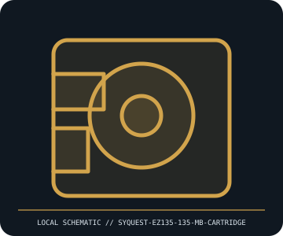

[ REMOVABLE MEDIA // MODEL-SPECIFIC RECORD ]
SyQuest EZ135 135 MB Removable Cartridge
SyQuest EZ135 removable hard-disk cartridge system, circa 1995. This catalog entry distinguishes the removable medium from its drive/reader and calls out model-specific fit and format caveats.

IDENTIFICATION: Transcribe the entire model/part number, capacity, generation and revision from the label or packaging. Confirm the exact host-device manual before inserting or writing.
Format, capacity and compatibility
| Product / part ID | SyQuest EZ135 135 MB Removable Cartridge |
|---|---|
| Generation / format | SyQuest EZ135 removable hard-disk cartridge system, circa 1995 |
| Capacity and medium | 135 MB formatted removable magnetic hard-disk cartridge; media identity is EZ135 (not 44/88 MB SyQuest cartridge families). Cartridge includes a rigid disk inside a protective shell. |
| Compatibility | Use in an EZ135 drive; the later EZFlyer 230 drive can read/write EZ135 cartridges according to period documentation, but EZ135 media do not work in older 44/88 MB SyQuest drives. Match drive interface separately (IDE, SCSI, parallel-port variants). |
| Version and model caveat | 135 MB is the formatted media capacity for the EZ135 generation. Do not infer drive compatibility from a shared SyQuest logo; EZ135, EZFlyer, and earlier SQ cartridge shells/formats differ. |
Handling and preservation
Store in its protective case, away from dust, heat, moisture, strong magnetic fields, and shock. Avoid moving or dropping a cartridge while the drive is spinning. Record labels and write-protect state, image the data using a known-good matching drive, and verify checksums before any write.
- Preserve original packaging, label, acquisition notes and any write-protect state; photograph the media before use.
- Make at least two independent copies of valuable data, verify checksums, and periodically test a restore. A removable cartridge or card alone is not an archival strategy.
Model and version notes
135 MB is the formatted media capacity for the EZ135 generation. Do not infer drive compatibility from a shared SyQuest logo; EZ135, EZFlyer, and earlier SQ cartridge shells/formats differ.
Standards and product-family sources establish the generation; exact model manuals, labels, regional revisions, firmware, interface and host support determine actual interchangeability.
Sources and standards
- Museum of Obsolete Media — SyQuest EZ135Historical format record for EZ135 generation, capacity, and drive distinction.
- Internet Archive — SyQuest EZ135 IDE installation guideScanned period installation guide; consult exact interface/model manual before connecting the drive.
Manufacturer and standards references are preferred; archival manuals or museum records are identified when products are discontinued. Capacity and compatibility claims are scoped to the specific SKU and generation named above.